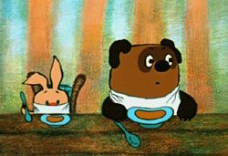

 Винни-Пух был всегда не прочь немного подкрепиться, в особенности часов в одиннадцать утра, потому что в это время завтрак уже давно окончился, а обед ещё и не думал начинаться. И, конечно, он страшно обрадовался, увидев, что Кролик достаёт чашки и тарелки.